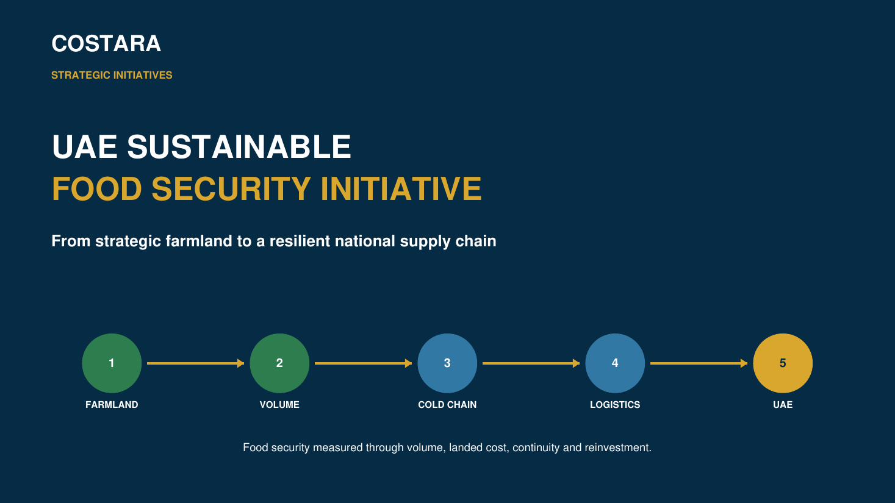

مبادرة استراتيجية • الأمن الغذائي
مبادرة الأمن الغذائي المستدام في دولة الإمارات
من الاستثمار الاستراتيجي في الأراضي الزراعية إلى سلسلة إمداد وطنية مرنة
تصوّر ينطلق من منظور ضبط التكاليف، ويربط الطاقة الزراعية المدارة استراتيجياً بحجم الإنتاج وسلسلة التبريد والنقل الدولي والتكلفة حتى الوصول إلى الإمارات ومرونة الإمداد وإعادة الاستثمار.
الحجمدرهم / كغنسبة الفاقددرهم / طنالتكلفة حتى الوصولالموازنة مقابل الفعلي